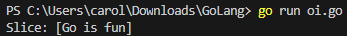
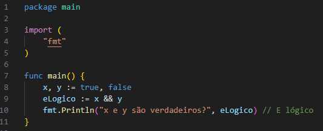

Bem vindo
Módulo I
Módulo II
Módulo III
Vantagens...Simplicidade e Facilidade de Uso:• Go é uma linguagem relativamente simples, com uma sintaxe limpa e fácil de ler. Isso facilita o aprendizado para novos programadores e permite que as equipes se tornem produtivas rapidamente; Alto Desempenho:• Go é uma linguagem compilada que oferece performance próxima de linguagens como C e C + +. Isso é muito vantajoso para aplicativos de alta performance, como servidores e sistemas distribuídos; Concorrência:• Go foi projetado com um modelo de concorrência embutido, baseado em goroutines, que facilita o desenvolvimento de programas concorrentes e paralelos. É uma grande vantagem para aplicativos que precisam lidar com múltiplas operações ao mesmo tempo, como servidores web; Biblioteca Padrão Rica:• A biblioteca padrão do Go é ampla e cobre muitas funcionalidades essenciais, como manipulação de strings, formatos de dados e redes, o que facilita o desenvolvimento sem a necessidade de bibliotecas externas para muitas tarefas; Facilidade de Implementação:• Go compila em código de máquina, produzindo executáveis independentes sem dependências externas. Isso facilita a implantação de aplicativos, especialmente em ambientes de contêiner, como o Docker; Comunidade Crescente e Suporte Corporativo:• Por ter sido desenvolvido pela Google, Go tem um suporte significativo de uma grande comunidade e de empresas, incluindo suporte para desenvolvimento em nuvem e uma infraestrutura robusta. Desvantagens...Gestão Limitada de Bibliotecas:• Go tem uma quantidade menor de bibliotecas e pacotes, comparado a outras linguagens populares, como Python ou JavaScript. Isso pode limitar o desenvolvimento de certas aplicações que dependem de bibliotecas de terceiros; Falta de Generics (até recentemente):• Até a versão 1.18, Go não tinha suporte a generics, o que tornava o código mais complexo e dificultava a criação de funções e estruturas reutilizáveis. Embora isso tenha sido parcialmente resolvido, o uso de generics ainda está amadurecendo na linguagem; Sistema de Tipagem Simples:• A simplicidade do sistema de tipos de Go pode ser uma limitação para desenvolvedores que buscam recursos mais avançados, como herança e polimorfismo encontrados em linguagens orientadas a objetos mais completas; Sintaxe Estrita e Pouco Flexível:• Go foi projetado para ser simples e direto, o que leva a algumas limitações, como a ausência de exceptions (tratamento de erros é feito manualmente) e a necessidade de verificar erros constantemente, o que pode aumentar a verbosidade do código; Desempenho Inferior para Cálculos Matemáticos Complexos:• Embora tenha boa performance para muitas tarefas, Go não é otimizado para cálculos científicos ou numéricos complexos. Outras linguagens, como C + + e Rust, ainda são mais indicadas para este tipo de trabalho; Curva de Aprendizado para Programação Concorrente:• Embora o modelo de goroutines seja uma vantagem, ele exige uma compreensão cuidadosa sobre como gerenciar concorrência para evitar problemas como deadlocks e race conditions, o que pode ser difícil para novos desenvolvedores. Aplicações- O Golang é amplamente utilizado no desenvolvimento de sistemas modernos, especialmente onde escalabilidade, desempenho e simplicidade são necessários. Ele é a escolha de várias empresas e desenvolvedores para criar serviços, ferramentas de infraestrutura, e sistemas de backend robustos. Abaixo estão algumas das aplicações mais comuns do Go tanto no dia a dia quanto no mundo da tecnologia: 1. Desenvolvimento de APIs e Backends de Serviços Web Go é amplamente utilizado para construir servidores web e APIs por sua simplicidade e alta performance. Com seu suporte nativo para concorrência, ele consegue lidar com grande volume de solicitações simultâneas de maneira eficiente. Exemplos: • APIs RESTful e GraphQL: Como o Go é eficiente na gestão de threads, ele é ideal para APIs que precisam responder rapidamente a várias requisições simultâneas. • Plataformas de e-commerce e redes sociais: Várias dessas plataformas, como Mercado Livre e SoundCloud, usam Go para gerenciar seus backends de forma escalável. 2. Microsserviços e Arquiteturas Baseadas em Contêineres No mundo moderno de microsserviços, onde grandes sistemas são divididos em serviços menores e independentes, o Go é uma escolha popular. Ele facilita o desenvolvimento de aplicações independentes que podem ser facilmente executadas e escaladas com containers (Docker e Kubernetes, por exemplo). • Kubernetes: A plataforma de orquestração de contêineres Kubernetes, amplamente utilizada, é escrita em Go. • Docker: Outra ferramenta fundamental na arquitetura de microsserviços, Docker também foi desenvolvida em Go. 3. Ferramentas de Automação e DevOps No universo DevOps, onde a automação é essencial, Go se destaca por ser rápido e independente de plataforma. Ele é amplamente usado em ferramentas de monitoramento, provisionamento e orquestração de infraestrutura. • Ferramentas de monitoramento e logging: Ferramentas como Prometheus, Grafana, Jaeger (para rastreamento distribuído) foram escritas em Go. • Infraestrutura como Código (IaC): Ferramentas como o Terraform, para gerenciamento de infraestrutura em nuvem, também usam Go. 4. Plataformas de Streaming e Compartilhamento de Arquivos Devido à sua capacidade de lidar com tarefas concorrentes, Go é muito eficaz para criar plataformas de streaming e compartilhamento de arquivos, onde várias conexões precisam ser gerenciadas ao mesmo tempo. • Plataformas de mídia e som: SoundCloud, por exemplo, usa Go para suportar sua infraestrutura de áudio e streaming. • Softwares P2P: Ferramentas de compartilhamento de arquivos, como BitTorrent e protocolos semelhantes, utilizam Go em algumas de suas aplicações. 5. Desenvolvimento de Jogos e Realidade Virtual (RV) Embora não seja a escolha principal para jogos de alto desempenho, Go é usado no desenvolvimento de jogos casuais e aplicativos de RV, especialmente para servidores de jogos online. • Servidores de jogos e chat multiplayer: Como o Go oferece baixa latência e suporte a concorrência, ele é uma boa escolha para jogos de multiplayer online. 6. Plataformas de Comércio Eletrônico e Finanças Go é usado no backend de plataformas financeiras e de e-commerce, onde eficiência e baixa latência são críticas. • Sistemas de pagamento: empresas de pagamento, como PayPal, usam Go para aumentar a performance de seus sistemas de transação. • Fintechs: muitas fintechs usam Go para sistemas de transações rápidas e seguras. 7. Aplicações em Ciência de Dados e Machine Learning Embora Python seja a escolha principal para ciência de dados, Go está ganhando espaço em áreas onde é necessária alta performance e execução paralela. • Processamento de dados: Ferramentas para processamento paralelo, como Pachyderm (para pipeline de dados), usam Go. • Machine Learning em produção: bibliotecas e APIs de machine learning estão surgindo em Go para implementar modelos em ambientes de produção. Exemplo no dia a dia Mesmo que não esteja sempre visível, Go está presente em muitos serviços usados diariamente: - Streaming de música (SoundCloud); - Redes sociais (usando APIs construídas em Go); - Serviços em nuvem (Google Cloud e AWS usam Go em várias aplicações internas e SDKs); - Ferramentas de desenvolvimento e automação, usadas por desenvolvedores para gerenciar servidores e redes. Conceitos básicos da linguagem:Estrutura do programa• Um programa Go começa com uma declaração de pacote, seguida das importações necessárias e a função principal (main), que é o ponto de entrada. Um exemplo básico: Terminal: 1. Pacotes (Packages) O primeiro elemento de qualquer programa Go é a declaração de pacote, que define o escopo do código. Para uma aplicação executável, usamos o pacote main, que indica ao compilador que é o ponto de entrada. • package main: define o pacote principal de uma aplicação. • import "fmt": importa o pacote fmt, que oferece funcionalidades para entrada e saída formatada. 2. Tipos de Variáveis Go é uma linguagem de tipagem estática, ou seja, o tipo das variáveis é conhecido em tempo de compilação. Ela suporta os principais tipos de variáveis: • Inteiros: int, int8, int16, int32, int64 (variáveis inteiras de diferentes tamanhos). • Decimal: float32, float64 (números com casas decimais). • Booleanos: bool (valores true ou false). • Strings: string (sequência de caracteres). • Arrays e Slices: []int, []string (coleções de elementos do mesmo tipo). • Structs: estruturas de dados definidas pelo usuário. • Maps: map[keyType]valueType, como dicionários. Declaração de variáveis Inteiros: Terminal: Decimal: Terminal: Booleanos: Terminal: Strings: Terminal: Arrays: Terminal:
Slices: Terminal:  Structs: Terminal: Maps Terminal: - Go permite a declaração explícita e a inferência de tipo: var x int = 10 // Declaração explícita y := 20 // Declaração com inferência de tipo (x é do tipo `int`) var name = "Alice" // Inferência também é possível com `var` 3. Operadores Go tem uma série de operadores comuns em outras linguagens: • Aritméticos: +, -, *, /, % • Comparação: ==, !=, <, >, <=, >= • Lógicos: &&, ||, !  • Atribuição: =, +=, -=, *=, /=, %= • Incremento e Decremento: ++, -- 4. Estruturas de Controle Condicionais: No Go, as estruturas condicionais incluem if, else if, e else. Essas estruturas permitem que o programa tome decisões baseadas em condições específicas. Uma das peculiaridades em Go é que não são necessários parênteses em torno das condições, apenas as chaves {} para delimitar o bloco de código que será executado. • If: Verifica uma condição e executa o bloco de código associado se a condição for verdadeira. Se x for maior que 10, o programa executa o que está dentro do bloco if. Caso contrário, ele ignora o bloco. • Else: Executado quando a condição no if é falsa e não há um else if com uma condição verdadeira. É um "caminho alternativo". Se x não for maior que 10, o bloco else é executado. • Else If: Adiciona uma condição adicional após um if. Isso permite verificar várias condições em sequência. Neste exemplo, o programa verifica três condições: - Se x é maior que 10, ele executa o bloco if. - Se x for exatamente 10, ele pula o if e executa o else if. - Caso nenhuma dessas condições seja verdadeira, ele executa o bloco else. Switch: No Go, o switch verifica uma variável ou condição, executa o primeiro case verdadeiro e para, sem precisar de break. Se nenhum case for verdadeiro, o default é executado. Esse tipo de switch é útil quando você quer testar diferentes condições sem uma variável central. For: No Go, o for é a única estrutura de loop. Ele pode funcionar como um for tradicional (for inicialização; condição; pós-iteração), como um while (for condição) ou até como um loop infinito (for {}). Aqui está um exemplo de loop de 1 a 5: 5. Funções Função Simples: Uma função que recebe parâmetros e retorna um único valor. Neste exemplo, a função add recebe dois inteiros (a e b) e retorna a soma deles como um inteiro. Função com Múltiplos Valores: Uma função que pode retornar mais de um valor.
Aqui, a função divide recebe dois inteiros (a e b) e retorna dois valores: o quociente (resultado da divisão) e o resto. 6. Estruturas de Dados Personalizadas (Structs) Em Go, structs são tipos de dados personalizados que agrupam variáveis relacionadas. Elas ajudam a modelar dados complexos de forma organizada. 7. Arrays e Slices Em Go, arrays e slices são usados para armazenar coleções de elementos, mas têm diferenças importantes. Arrays: • Definição: Um array é uma coleção de elementos de tamanho fixo. O tamanho é parte do tipo do array e não pode ser alterado após a declaração. • Sintaxe: var nome [tamanho]tipo Slices: • Definição: Um slice é uma abstração mais flexível sobre arrays. Eles podem crescer e encolher, e não têm um tamanho fixo. Um slice é, essencialmente, uma referência a um array subjacente. • Sintaxe: var nome []tipo 8. Maps Em Go, um map é uma coleção de pares chave-valor, onde cada chave é única. Ele permite acesso rápido aos valores usando as chaves. A sintaxe básica para declarar um map é var nome map[chave]valor, e pode ser inicializado com make. EXEMPLOS MAIS AVANÇADOS: Trabalhando com Erros Personalizados Em Go, podemos criar erros personalizados usando errors.New para mensagens fixas e fmt.Errorf para mensagens formatadas. Exemplo com errors.New: Usamos errors.New para criar um erro simples, como ao tentar dividir por zero: Exemplo com fmt.Errorf: Com fmt.Errorf, podemos incluir mais contexto, como valores específicos: Isso torna o erro mais informativo: "Erro: não é possível dividir 10 por 0". Uso Avançado de Slices Criação e Adição: nums := []int{1, 2, 3} cria um slice. append(nums, 4, 5) adiciona elementos ao final. Corte de Slice: subSlice := nums[1:4] cria um "sub-slice" do índice 1 ao 3. Alterações em subSlice também afetam nums porque compartilham a mesma memória. Cópia de Slice: copySlice := make([]int, len(nums)) cria uma cópia independente com copy(copySlice, nums). Modificar copySlice não afeta nums. Canal com Buffer para Comunicação Criação do Canal: • messages := make(chan string, 3) cria um canal com um buffer de tamanho 3, permitindo armazenar até três mensagens antes que uma leitura seja necessária. Envio de Mensagens: • As mensagens "Mensagem 1", "Mensagem 2", e "Mensagem 3" são enviadas para o canal. Como o canal tem um buffer, isso pode ser feito sem que haja goroutines esperando para receber as mensagens. Leitura de Mensagens: • fmt.Println(<-messages) lê e imprime cada mensagem na ordem em que foram enviadas. Exemplo de HTTP Server Simples O Go facilita a criação de servidores HTTP simples e eficientes. O exemplo abaixo ilustra um servidor que responde a diferentes rotas: 1. Handlers: • rootHandler: Responde na raiz com uma mensagem de boas-vindas. • helloHandler: Retorna uma saudação na rota /hello. • goodbyeHandler: Responde com uma despedida apenas para requisições POST na rota /goodbye. 2. Execução: • Use go run main.go para iniciar o servidor na porta 8080. • Acesse as rotas no navegador ou com ferramentas como curl para ver as respostas. Esse modelo é a base para desenvolver APIs e aplicativos web em Go. Padrão de Erro e Recuperação com defer e recover Defer e recover são usados para tratar panics e evitar encerramentos abruptos. 1. Defer: Adia a execução de uma função até que a função atual termine. 2. Recover: Captura panics para que o programa possa continuar a execução. • safeDivide: Tenta dividir a por b. Se b for zero, um pânico ocorre, mas recover o captura. • O programa continua a executar após o pânico. Instalação e configuração, história da linguagem... |
|---|